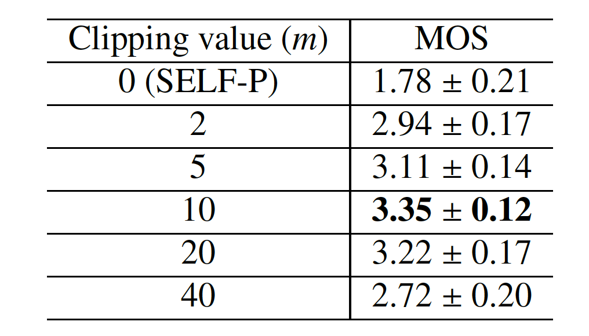
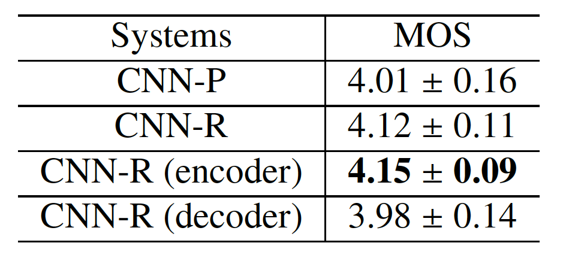
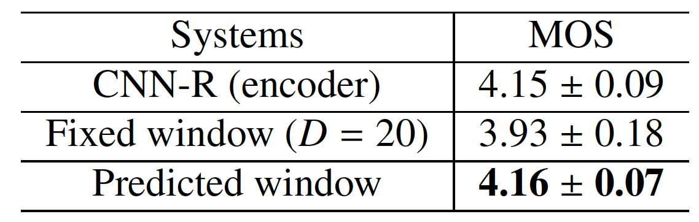
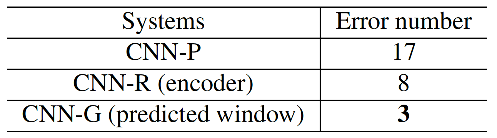

Audio samples for "On the localness modeling for the self-attention based end-to-end speech synthesis"
Authors: Shan Yang, Heng Lu, Shiying Kang, Liumeng Xue, Jinba Xiao, Dan Su, Lei Xie, Dong Yu
Abstract: Attention based end-to-end speech synthesis achieves better performance in both prosody and quality compared to the conventional "front-end"--"back-end" structure. But training such end-to-end framework is usually time-consuming because of the wide use of recurrent neural networks. To enable parallel calculation and long-range dependency modeling, a solely self-attention based framework named Transformer is proposed recently in the end-to-end family. However, it lacks position information in sequential modeling, so that the extra position representation is crucial to achieve good performance. Besides, the weighted sum form of self-attention is conducted over the whole input sequence when computing latent representation, which may disperse the attention to the whole input sequence other than focusing on the more important neighboring input states. In this paper, we introduce two localness modeling methods to enhance the self-attention based representation for speech synthesis, which maintain the abilities of parallel computation and global-range dependency modeling in self-attention at the same time. We systematically analyze the solely self-attention based end-to-end speech synthesis framework, and unveil the importance of local context. Then we add the proposed relative-position-aware method to enhance local edges and experiment with different architectures to examine the effectiveness of localness modeling. In order to achieve query-specific window and discard the hyper-parameter of the relative-position-aware approach, we further conduct Gaussian-based bias to enhance localness. Experimental results indicate that the two proposed localness enhanced methods can both improve the performance of the self-attention model, especially when applied to the encoder part. And the query-specific window of Gaussian bias approach is more robust compared with the fixed relative edges.
1. Refer to Section 6.3 in the paper. Comparing the solely self-attention model with character- and phoneme-level inputs:
1.1. A former wool grower and shearer's cook has won Australia's richest literary prize.
SELF-P (char-level):
SELF-P (phoneme-level):
1.2. I also understand that similar branch organizations have made their appearance in Europe.
SELF-P (char-level):
SELF-P (phoneme-level):
Short summary: With the solely self-attention, only a few words in the character-level model are correctly pronounced. Injecting prior language-dependent knowledge can significantly improve the performace.
2. Refer to Section 6.4.1 in the paper. With character-level inputs in solely self-attention model, comparing the effectiveness of relative-position-aware localness enhancements (SELF-P vs SELF-R):
2.1. I made a raft of far-reaching promises and improbable bargains.
SELF-P (char-level):
SELF-R (window=2):
SELF-R (window=10):
SELF-R (window=40):
2.2. In cancer, cells ignore the normal signals from the body and proliferate uncontrollably.
SELF-P (char-level):
SELF-R (window=2):
SELF-R (window=10):
SELF-R (window=40):
Short summary: With relative-position-aware, the solely self-attention model with character-level input can generate mostly intelligent speech. And the length of local window affects the model performance.

Table 1. MOS evaluation of SELF-R systems with dierent clipping value with 95% confidence interval
3. Refer to Section 6.4.2 in the paper. With CNN pre-net, comparing the effectiveness of relative-position-aware approach (CNN-P vs CNN-R):
3.1. Just go to Google dot org and then check out flu trends.
CNN-P:
CNN-R:
3.2. He added, no hairs of Negroid origin were observed on any of the slides.
CNN-P:
CNN-R:
3.3. Her arthritis bothered her a lot in the last months.
CNN-P:
CNN-R:
Short summary: CNN-P suffers froms the skipping pronunciation, which can be alleviate by CNN-R. And CNN-R has better prosody according to listening test.
Figure 1. Preference test
4. Refer to Section 6.4.2 in the paper. Comparing the effectiveness of applying relative-position-aware approach in different modules:
3.1. On February eighth, the military began to ready itself for a possible strike.
CNN-R:
CNN-R (only in encoder):
CNN-R (only in decoder):
3.2. I think we need to take a long look at all of our security procedures, he said.
CNN-R:
CNN-R (only in encoder):
CNN-R (only in decoder):
Short summary: No significant difference between CNN-R and CNN-R (encoder). But CNN-R (decoder) also suffers froms the skipping and repeating problems like CNN-P.

Table 2. MOS evaluation of CNN-P and CNN-R with 95% confidence interval
5. Refer to Section 6.5 in the paper. Comparing the effectiveness of learnable Gaussian bias apporach (CNN-R vs CNN-G ):
5.1. Only a mathematical proof, based on logic, can handle questions of the infinite.
CNN-R (encoder):
CNN-G:
5.2. I never saw anything like her in my life.
CNN-R (encoder):
CNN-G:
Short summary: No significant difference between CNN-R (encoder) and CNN-G. But CNN-G is much more stable than all other systems.

Table 3. MOS evaluation of CNN-G systems with 95% confidence interval.

Table 4. Counted errors of dierent models on the 100-sentence test set.